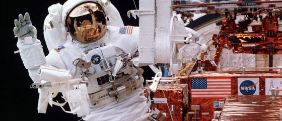

↗Working together, far from home
Life and research in orbit depend on teamwork, careful planning and technology designed to work in an extraordinary environment. Explore what makes a space station a laboratory unlike any other.
Explore the mission